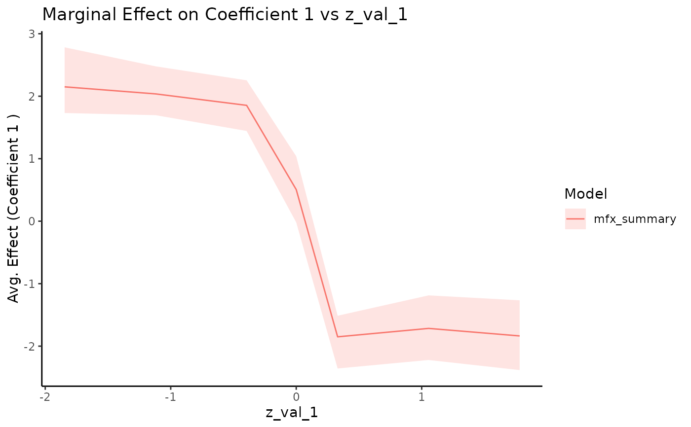

Plot Summarized Marginal Effects
plot.summary.marginal_effects.RdCreates a ggplot visualization of the summarized marginal effects from one or
more summary.marginal_effects objects.
Usage
# S3 method for class 'summary.marginal_effects'
plot(
x,
...,
coef_index = 1,
ci_level = 0.95,
plot_axis_var = NULL,
xlab = NULL,
ylab = NULL,
title = NULL,
color_values = NULL,
linetype_values = NULL,
fill_values = NULL,
show_legend = TRUE,
x_name = NULL
)Arguments
- x
An object of class
"summary.marginal_effects".- ...
Additional named objects of class
"summary.marginal_effects"to be plotted alongsidex. The names will be used in the legend.- coef_index
Integer, the index of the coefficient (
beta) to plot. Defaults to 1.- ci_level
Numeric (0 < ci_level < 1), the credible interval level to display as a ribbon (e.g., 0.95 for a 95% CI). Requires the corresponding quantiles (e.g., q2.5 and q97.5 or q25 and q975) to be present in the
summary_dfof the input object(s). Defaults to 0.95.- plot_axis_var
Character, the name of the column in
summary_dfto use on the x-axis (must be one of thez_val_*columns derived from the non-NA columns of the originalz_valuesinput tomarginal_effects). IfNULL(default), the function will use the first column found inx$summary_dfthat matches the pattern^z_val_[0-9]+$.- xlab
Character, custom label for the x-axis. If
NULL(default), the label will be the value ofplot_axis_var.- ylab
Character, custom label for the y-axis. Defaults to describing the mean effect of the selected coefficient.
- title
Character, custom plot title. If
NULL(default), the title will indicate the coefficient and the variable plotted on the x-axis.- color_values
Named character vector for custom colors (e.g.,
c("Model A" = "blue", "Model B" = "red")). IfNULL, default ggplot colors are used.- linetype_values
Named character vector for custom linetypes (e.g.,
c("Model A" = "solid", "Model B" = "dashed")). IfNULL, default ggplot linetypes are used.- fill_values
Named character vector for custom ribbon fills (e.g.,
c("Model A" = "blue", "Model B" = "red")). IfNULL, default ggplot fills derived from colors are used.- show_legend
Logical, should the legend be displayed? Defaults to
TRUE.- x_name
Character, optional name to assign to the primary object
xin the legend. IfNULL(default), the function attempts to infer the name.
Details
This function plots the specified coefficient's posterior mean and credible
interval against the variable specified by plot_axis_var.
If the original marginal_effects call used a z_values matrix that varied
across multiple dimensions (resulting in multiple z_val_* columns in the
summary_df), this plot will show the relationship against the chosen
plot_axis_var, overlaying the results from all combinations of the
other varying dimensions. For instance, if z_val_1 and z_val_2 exist
and plot_axis_var = "z_val_1", the plot will show lines for each distinct
value of z_val_2 (implicitly, as they will be overlaid).
To visualize the effect along one dimension conditional on specific values of
other dimensions, you should filter the summary_df within the
summary.marginal_effects object before passing it to this function.
Examples
# --- Full Example Sequence for Plotting ---
# Requires ggplot2 and bayesm.HART
if (requireNamespace("bayesm.HART", quietly = TRUE) &&
requireNamespace("ggplot2", quietly = TRUE)) {
# 1. Simulate Data (using a step function for beta_i)
# Define simulation parameters
nlgt_sim <- 200; nT_sim <- 20; p_sim <- 3; nz_sim <- 2
nXa_sim <- 1; nXd_sim <- 0; const_sim <- TRUE
# Calculate expected ncoef based on parameters
ncoef_sim <- const_sim*(p_sim - 1) + (p_sim - 1)*nXd_sim + nXa_sim
# Define arguments for the step function (using defaults from sim_hier_mnl)
step_args_ex <- list(
cutoff = 0, # Default cutoff
beta_1 = rep(-2, ncoef_sim), # Value above cutoff (default in sim_hier_mnl)
beta_2 = rep(2, ncoef_sim), # Value below cutoff (default in sim_hier_mnl)
Z_index = 1 # Step based on Z1
)
sim_data <- bayesm.HART::sim_hier_mnl(nlgt = nlgt_sim, nT = nT_sim, p = p_sim, nz = nz_sim,
nXa = nXa_sim, nXd = nXd_sim, const = const_sim,
seed = 123,
beta_func_type = "step",
beta_func_args = step_args_ex # Pass the full list
)
Data <- list(p = sim_data$p, lgtdata = sim_data$lgtdata, Z = sim_data$Z)
# Use actual ncoef from simulation output for consistency
ncoef <- sim_data$true_values$dimensions$ncoef
# 2. Fit Model (minimal run for example)
Prior <- list(ncomp = 1,
bart = list(num_trees = 10,
num_cut = 10))
Mcmc <- list(R = 500, keep = 1, nprint = 0)
fit <- try(bayesm.HART::rhierMnlRwMixture(Data = Data, Prior = Prior,
Mcmc = Mcmc,
r_verbose = FALSE), silent = TRUE)
if (!inherits(fit, "try-error")) {
# 3. Define Grid (Vary Z1, which drives the step function)
target_z_index <- 1
grid_z1 <- sort(c(seq(min(Data$Z[, target_z_index]),
max(Data$Z[, target_z_index]),
length.out = 6), 0)) # Use more points for step
z_grid <- matrix(NA, nrow = length(grid_z1), ncol = ncol(Data$Z))
z_grid[, target_z_index] <- grid_z1
# 4. Calculate Marginal Effects
mfx_result <- marginal_effects(fit,
z_values = z_grid,
Z =Data$Z,
burn = 200,
verbose = FALSE)
# 5. Summarize Marginal Effects
mfx_summary <- summary(mfx_result, probs = c(0.025, 0.5, 0.975))
# 6. Plot the Summary (showing effect of Z1 on coef 1)
# Ensure the axis variable name matches the column in summary_df
plot_var_name <- paste0("z_val_", target_z_index)
try(plot(mfx_summary, coef_index = 1, plot_axis_var = plot_var_name), silent = TRUE)
} else {
message("Model fitting failed in example, skipping plotting.")
}
} else {
message("Requires bayesm.HART and ggplot2 packages for examples.")
}
